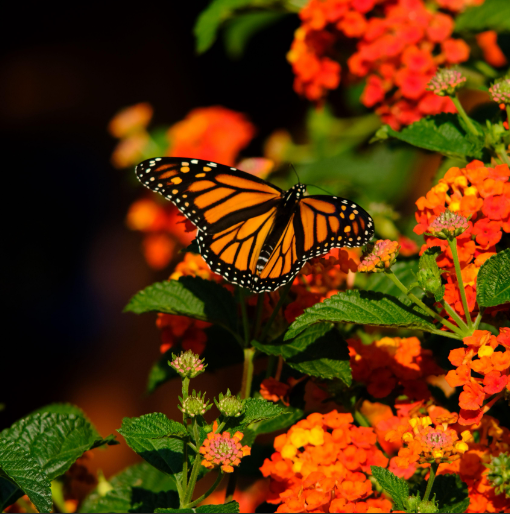

Monarch Butterflies

Monarch butterflies are among the most iconic and beloved insects on Earth, instantly recognizable by their vivid orange wings traced with bold black veins and dotted with delicate white markings. Beyond their striking appearance lies one of nature’s most astonishing phenomena: a migration spanning thousands of miles across an entire continent. Each year, generations of monarchs travel from the United States and Canada to the mountain forests of central Mexico, navigating distances far beyond what their fragile bodies seem capable of achieving.
The monarch’s life cycle is a story of transformation and resilience. Beginning as tiny eggs laid on milkweed plants, the larvae emerge as striped caterpillars that feed exclusively on these leaves. After growing rapidly, they form a jade-green chrysalis adorned with golden flecks, within which their bodies completely reorganize. When the adult butterfly emerges, it carries not only the beauty of its new form but also the instinct to continue a journey that no single butterfly completes alone.
Despite their strength and endurance, monarch populations have declined dramatically in recent decades. Habitat loss, pesticide exposure, and climate change have reduced the availability of milkweed and nectar sources essential for their survival. Conservationists emphasize that even small actions can make a difference: planting native flowers, avoiding harmful chemicals, and protecting natural habitats all contribute to sustaining these remarkable pollinators.
Watching a monarch drift on a warm breeze is to witness both grace and determination. Their presence transforms ordinary landscapes into something extraordinary, connecting backyards and wild spaces to a migration route older than modern civilization.